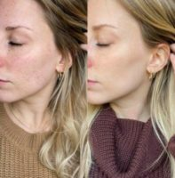

Name: Grace Medical Aesthetics
Display name: Grace Medical Aesthetics
Mission: Established in 2012, Grace Medical Aesthetics is now a nationally ranked anti-aging medical aesthetics practice with locations in Southbury, CT, Bedford Hills, NY, Westport, CT, and Southington, CT. Grace is leading the aesthetic industry with experience, knowledge, and an artistic eye for facial rejuvenation. Specializing in injectables, medical grade facial treatments, laser services, body contouring, and more, the Grace team strives to help you feel and look your best.
Medical director: Charis Wipfler, APRN-FNP, BC
Website: https://www.gracemedicalaesthetics.com/
Office hours: Mon: 9:00am – 6:00pm
Tue: 9:00am – 6:00pm
Wed: 9:00am – 6:00pm
Thu: 9:00am – 6:00pm
Fri: 9:00am – 6:00pm
Sat: 9:00am – 4:00pm
Phone: (860) 531-4752
Twilio phone: (860) 531-4752
Address: 800 Main St. S, Ste. 112, Southbury, Connecticut, USA, 06488
City: Southbury
State: Connecticut
Country code: US
Postal code: 06488
Phone: +18605784722
Country: USA
GPS coordinates on map: 41.4629825,-73.2332679
Treatments:
- Microdermabrasion
- Botox
- Thread Lift
- Juvederm
- Restylane
- Radiesse
- Sculptra
- Laser Hair Removal
- Laser Resurfacing
- Chemical Peel
- Glycolic Peel
- TCA Peel
- Salicylic Peel
- YAG Laser
- IPL
- Dermaplaning
- Facial
- Nonsurgical Facelift
- Dysport
- Retin-A
- Lux 1540
- Hyaluronidase
- Latisse
- Lip Fillers
- Skin Rejuvenation
- Jessner Peel
- Skin Tightening
- Laser Peel
- Dermal Fillers
- Fractional Laser
- Belotero
- Xeomin
- CoolSculpting
- Ultherapy
- Liquid Facelift
- Botox for Migraines
- Voluma
- ResurFX
- Restylane Silk
- Nonsurgical Neck Lift
- Microneedling
- Kybella
- Restylane Lyft
- Hand Rejuvenation
- Vivace
- Restylane Refyne
- Restylane Defyne
- CoolMini
- PRP Injections
- DiamondGlow
- Obagi Nu-Derm
- Botox for TMJ
- Botox for Gummy Smile
- SkinPen
- Chin Filler
- Transgender Laser Hair Removal
- Botox for Hyperhidrosis
- Microneedling RF
- Jeuveau
- NovaThreads
- Opus Plasma
- Stellar M22
- Restylane Contour
- Cheek Fillers
RealSelf Info
Profile created: Dec 27, 2016
Profile modified: Jun 20, 2023
Business type: Practice
Review count: 51
Rating: 4.9
Rating time spent: 5
Rating answered questions: 5
Rating bedside manner: 5
Rating after care: 5
Rating payment process: 5
Rating wait times: 5
Rating courtesy: 5
Rating responsiveness: 5
RealSelf’s PRO: Yes
Realself network status: candidate
Medical director: Charis Wipfler, APRN-FNP, BC
Special Offers
Heading
Start Time / End Time
Detail
Treatments
$212 off Microneedling with PRP Facial
Jun 20, 2022 /
May 17, 2033
As part of Grace Medical’s “Facial Membership”. The “Facial Membership” is a $119 per month membership that grants one Microneedling, IPL, 1540 Fractionated Laser, Silk Peel Dermalinfusion, or Chemical Peel per month. Add-on’s available for PRP (+$119), 1064 Laser (+$119), and more. 4 month commitment. No sign up cost. No cancellation fee. Rollovers granted. Contact us for full details.
Specific treatments
Microneedling, IPL, DiamondGlow, + more – $119
Jun 20, 2022 /
May 17, 2033
Grace Medical’s “Facial Membership” is a $119 per month membership that grants one Microneedling, IPL, 1540 Fractionated Laser, Silk Peel Dermalinfusion, or Chemical Peel per month. Add-on’s available for PRP (+$119), 1064 Laser (+$119), and more. 4 month commitment. No sign up cost. No cancellation fee. Rollovers granted. Contact us for full details.
Specific treatments
Laser Hair Removal starting at $49 per month
Jun 20, 2022 /
May 17, 2033
Laser Hair Removal treatments should be performed every 4 weeks and Grace Medical’s “Laser Hair Removal Membership” makes staying on track easy. No sign up cost. No cancellation cost. Rollovers granted. Priced per area starting at $49 per month. 4 month minimum commitment. Contact us for full details.
Specific treatments
20% Off All Skincare Products
Jan 23, 2020 /
May 17, 2033
First time skincare consultation clients receive 20% off all available skincare products (Latisse excluded). Product quantity not limited. One time offer. Discount given only on day of consultation.
Any treatment
Staff

Charis Wipfler, APRN-FNB, BC
Name: Charis Wipfler, APRN-FNB, BC
Position: APRN Owner
Can answer: 1
Years experience: 20
Biography: Charis is a graduate of Sacred Heart University and a Board Certified Nurse Practitioner of Family Practice and Aesthetics. She served 13 years as an emergency nurse at Bristol Hospital and Waterbury Hospital in Connecticut. She decided to pursue her love of aesthetic medicine on a full time basis and created Grace Medical Aesthetics in April of 2012. Since then, Grace has evolved into a successful anti-aging medical practice with 5 locations across CT and NY. She is the 7th highest utilizers of Galderma products in the country and #1 utilizer in CT and NY.
Before branching out as an independent practitioner, she received extensive training in Medical Aesthetics through Allergen, Medicis, and Merz pharmaceuticals. She is certified in basic and advanced techniques by Aesthetic Advancements, Duet, and PALLETTE Resources. Charis has also had the unique opportunity to pursue double internships in both dermatology and a comprehensive Aesthetic and Laser training internship.
Name: Robyn Calitri, RN-BSN
Position: Registered Nurse
Biography: Robyn leads the Grace Medical Aesthetics team as the Clinical Director and Operations Manager across all Grace offices. Robyn received her nursing degree from Southern New Hampshire University and spent the beginning of her career as an emergency department nurse. She transitioned to aesthetic medicine in 2014 starting out at Grace as a laser hair removal nurse.
Eager to learn, she began to add other aesthetic services into her arsenal. Laser and skincare treatments are a complicated and personalized skillset, and Robyn continuously attends conferences and seminars to stay on top of the latest techniques. In the past, she has traveled to New York City, Las Vegas, the DC area, and many others for exclusive classes and trainings. In the Grace office specifically, she is the go-to for custom Ultherapy treatments as she has had extensive advanced training in this modality that she passes along to the rest of the staff.
Name: Heather Tomchik, PA-C
Position: Physician Assistant
Biography: Heather graduated summa cum laude from Western Connecticut State University with a Bachelor of Arts degree in biology. She was then accepted to the Yale University Physician Associate program and graduated with honors obtaining her master’s degree in Medical Science. She has been certified by the National Commission for Certification of Physician Assistants since 2005.
Heather has worked in plastic surgery and aesthetics since 2011 to parlay her love of artistry, symmetry, and attention to detail into full time work as a physician assistant. She has done advanced training in aesthetic injectables with the American Society of Plastic Surgeons as an affiliate member and has traveled extensively to attend educational courses to help refine her techniques.
Heather joined us in 2017 and leads our Bedford Hills, NY office. She has built a loyal clientele who gravitate to her warmth and subtle results.
Krista Stryjewski, APRN-DNP
Name: Krista Stryjewski, APRN-DNP
Position: Nurse Practitioner
Biography: Krista is a Board Certified Nurse Practitioner coming from a background in emergency nursing. She received her undergraduate degree from the University of Saint Joseph’s in 2010 and went on to complete her master’s degree in nursing education from Sacred Heart University in 2013. She again graduated from the University of Saint Joseph in 2018 as a Family Nurse Practitioner with a doctorate of nursing practice.
Krista has always enjoyed skin care and medical aesthetics. She joined the Grace Medical team in early 2016 as a laser hair removal and skincare nurse. In 2018, Krista began injectable training under the watchful eye of Charis and has since expanded her scope of practice to include all injectables. She continues to learn any chance she can by attending advanced injectable trainings, conferences, and seminars. She has a passion for teaching and takes pride in being able to explain all areas of your customized treatment plan with simplicity.
Name: Alma Joseph, APRN-FNP
Position: Nurse Practitioner
Biography: Alma M. Joseph is a Board Certified Family Nurse Practitioner that joined the Grace Medical team in 2019 after specializing in medical and cosmetic dermatology. Through her background previously working in critical care as a RN, Alma believes in taking advantage of each day and takes pride in helping others. She is our lead practitioner in our Westport, CT office.
Graduating with honors from Fairfield University, she obtained her master's in nursing. She also holds a bachelor's in public health from Southern CT State University where she worked on behalf of the Yale Emerging Infections Program (EIP) and Centers for Disease Control (CDC) to provide epidemiological surveillance of food-borne diseases in CT.
Alma is passionate about helping individuals medically and cosmetically, practicing with exceptional standard of care for her patients.
Christina Pruchnicki, APRN-FNP
Name: Christina Pruchnicki, APRN-FNP
Position: Nurse Practitioner
Biography: Christina is an experienced emergency department nurse practitioner who became a part of the Grace Medical team in 2016. Starting as a laser hair removal nurse, she soon added laser and skincare treatments to her repertoire. She is now an injector, having trained under Charis to help her develop an eye for detail and a thorough approach for her client's injectable journeys. Christina began her Grace career practicing for many years in our Southbury, CT office and is now extremely excited to be leading one of our newest locations in Southington, CT!
Christina earned her bachelor's degree in nursing from Western Connecticut State University. She then pursued her master's degree at Sacred Heart University in their Family Nurse Practitioner program.
Name: Alice Varga
Position: Registered Nurse
Biography: Alice graduated top of her class at Montefiore School of Nursing in late 2021 and upon completion of her degree, she has fulfilled her goals of becoming an aesthetic nurse and injector for Grace Medical Aesthetics. She is thrilled to be the lead injector in one of our newest locations in Manhattan!
Her path to aesthetic nursing started in 2018 when she joined the Grace Medical Aesthetics team as Charis’s assistant. Being by Charis's side day in and day out opened Alice's eyes to her new ambitions. She had the unique opportunity to be able to learn about the techniques and nuances of injecting in conjunction with her nursing studies.
Name: Jill Talamo, RN
Position: Registered Nurse
Biography: Jill joined the Grace Medical Aesthetics team as an aesthetic nurse in 2021 in our Southbury office. She graduated from St. Vincent’s Nursing School out of Bridgeport, CT in 2005. Before moving to the aesthetic field, Jill worked oncology and med/surg at various hospitals in Connecticut. She also received a wound vac therapy certification while working homecare and case management at Visiting Nurse Services of CT. The 8 years prior to joining the Grace team, Jill worked for United Healthcare reviewing and authorizing medical claims.
Jill is thankful for the opportunity to shift her nursing scope into the world of aesthetics. She enjoys learning and was very eager to return to hands on care. She loves being able to provide her clients with the best possible experience and results.
Name: Lauren White, RN-BSN
Position: Registered Nurse
Biography: Lauren joined the Grace Medical team in 2014 with over 10 years of nursing experience as one of our first team members. Her multi-faceted experience involves time spent in Intensive Care, Oncology, Internal Medicine, and Allergy and Immunology. Lauren was looking for something to further enrich her nursing experience when she joined Grace Medical Aesthetics.
Lauren quickly learned that she loved the field of aesthetic nursing. Though she is only part time with Grace, you can be lucky enough to catch her on a Friday shift for laser hair removal, skincare and laser treatments, Ultherapy, and more.
Lauren takes great pride in ensuring each client feels comfortable during their visit, while always providing safe and effective treatment.
Name: Jessica McSaveny
Position: Aesthetician
Biography: Jessica is a licensed Esthetician, CoolSculpting specialist, and our patient liaison. She joined Grace in 2017 with a wealth of knowledge in the aesthetics world thanks to her experience in dermatology offices, plastic surgeon offices, and medspas!
She received a Bachelor of Science degree at Western Connecticut State University in communications and felt like she wanted to do more with her career. She had a passion for aesthetics and went back to school in 2015 at Brunswick Community College for her esthetician license.
Jessica has a welcoming personality with a proven track record of practicing safe, effective, and hygienic treatments. She believes everyone deserves to be the best version of themselves! She is our go-to for skincare consultations and prides herself on her knowledge of all things skin. She thoroughly enjoys customizing product regimens and treatment plans for clients looking to enhance their skincare.
Name: Jennifer Berardi
Position: Marketing Manager
Biography: If you've ever DM’d the Grace Medical Aesthetics Instagram account, you have already spoken with Jen. After a brief stent at our front desk in 2016, Jennifer carved out her position as Grace Medical Aesthetics’ Social Media Manager, then Marketing Director, and now as our Communications Director with innovate new ideas and execution. She takes on many roles within the office, including running all Grace Medical Aesthetics social and digital accounts, project management, filming and editing all video content, advertising, press relations, and event planning. Jen strives to keep the Grace social media accounts personal and transparent. In a world of filters, photoshop, and unrealistic body images, she hopes to educate those interested in medical aesthetics about the real-life expectations.
Name: Debbie Kugler
Position: Practice Manager
Biography: Debbie became the first official employee of Grace Medical in 2013 as a part time administrative assistant. Since then, she's had the pleasure of watching Grace Medical Aesthetics blossom into the practice it is today. As the practice grew, so did Debbie's role within it. Debbie now Managing Director of all Grace offices and oversees the billing department.
Her past experience in customer service and teaching (3rd grade bilingual teacher, to be exact) has allowed her to perfectly fit into her managerial position. You may occasionally see her hands-on at the Grace Medical front desk, but she spends most of her days behind the scenes. She heads the billing department taking care of all aspects of the various memberships offered and manages the entirety of the staff.
Habla con fluidez el espanol. She speaks fluent Spanish and often translates for clients when necessary. Most of the staff turns to her to learn!
Name: Aida Rodriguez
Position: Receptionist
Biography: Aida became a part of the Grace team in 2020 after years of customer service experience and medical office management. She holds an associate's degree in liberal arts and sciences and a bachelor's degree with a concentration in Human Services. She quickly became an integral member of the team to grow into the role of Off-Site Manager for our Bedford Hills and Westport offices in early 2022. Aida has a passion for helping others and takes pride in making sure our clients feel welcomed the minute they walk in the door!
Name: Zoe Mena
Position: Receptionist
Biography: Zoë joined the Grace Medical team in 2018 representing at the front desk and behind the scenes with customer service. As a senior staff member in our Southbury office, she grew into the role of Southbury Office Supervisor in early 2022.
Zoë holds a bachelor's degree in interior design from the University of New Haven and is a freelance make up artist, so an eye for beauty is well engrained in her. She has a wealth of experience with a past in both retail and customer service within the beauty industry.
Name: Cristina Maciulewski
Position: Medical Assistant
Biography: Cristina became a part of the Grace team in 2018 on the front desk line with a background in customer service, sales, and aesthetics after working as both an esthetician and skincare sales rep. In early 2022, Cristina expanding her role to add Injector's Assistant. She floats between positions and offices with ease as a helping hand for the entire team.
If there's a homemade treat in the office, everyone looks to Cristina. She notoriously bakes on a whim for the staff to enjoy and always plans a special surprise for birthdays and celebrations!
Name: Tina Shkreli
Position: Medical Assistant
Biography: Tina joined the Grace Medical Aesthetics team in 2020 as an administrative assistant. She is now an Injector's Assistant, working side by side with Charis Wipfler in all of the Grace offices. At 16 years old, she began working in a hair salon and attended BOCES to graduate with a cosmetology license. She was working as a junior stylist and decided a change in career path was in order. Tina aspires to go back to school for nursing with a goal of become an aesthetic RN. Having a position in a medical aesthetics practice is sure to point her in the right direction!
Name: Mark Wipfler, MD, FACEP
Position: Staff
Biography: Dr. Mark Wipfler is a Board Certified Emergency Medicine Physician at Danbury Hospital, as well as a Certified Age Management Physician trained by Cenegenics.
After 25 years in emergency medicine, Dr. Wipfler found that a sharp decline in health and an increase chronic disease were pervasive in his baby-boomer population and was often asked how one could age with more vitality. Age management medicine became a passion of Dr. Wipfler’s and he is happy to incorporate his training into his medical practices.
Dr. Wipfler is also fully trained in NeoGraft Hair Restoration, having attended a preceptorship in Nashville, TN with a leading hair restoration physician and the Neograft team.
Name: Devena Smith
Position: Medical Assistant
Biography: Devena joined the Grace Medical Aesthetics' team in June of 2020 with a combination role of administrative assistant and injector's assistant. She previously worked 6+ years in the fashion industry as a photographer and creative director for fashion editorials, model portfolios, and NYFW runways. Lucky for the Grace team - she has become our resident photographer! All headshots and group shots you see are taken by her, even her own. The opportunity to merge her love of beauty and creativity with aesthetics has been nothing less than exciting and fulfilling!
Her favorite thing about working in beauty is hearing about and being a part of people's journey. It is especially meaningful to help women from all over the world feel more confident in their skin.
Name: Danielle Doyle
Position: Medical Assistant
Biography: Danielle joined the Grace Medical Aesthetics team in 2021 with the opening of the Westport, CT office. Although she is a more recent team member, she already feels at home and honored to work with kind, empowering women everyday!
Danielle comes with 10 years of experience in dermatology. Along with her love for cosmetics, her two passions have forged a path for her into the world of aesthetics. She will be with a familiar face in our Westport office- the lead practitioner, Alma Joseph. Before their careers lead them separately to Grace, they worked alongside one another in a similar practitioner/assist position!
Name: Taylor Jennett
Position: Medical Assistant
Biography: Taylor became a part of the Grace Medical Aesthetics team in 2021 as an injector’s assistant in our Southbury, CT office. She comes with 5 years of experience in aesthetic dermatology and is a certified CoolSculpting specialist, having been trained in their higher tier Master’s program. She has an undergraduate degree in health sciences and is currently working towards a master in nutrition.
Name: Katie Schnyder
Position: Receptionist
Biography: Katie joined the Grace Medical Aesthetics team in 2021 as an Administrative Assistant in our Southbury, CT office, and with her brought a lot of smiles! In her past career, Katie was a kindergarten teacher for over 25 years. As you can guess, she is extremely funny, patient and kind. She has transitioned into her role at Grace very smoothly.
Name: Rosemary Dizon
Position: Receptionist
Biography: Rosemary joined the Grace Medical Aesthetics team in 2021 as an Administrative Assistant in our Bedford Hills, NY office. In her past, she has served in many client facing job settings at several companies across a variety of industries for 30+ years. She attended the Borough of Manhattan Community College, studying Business Administration. She is currently enrolled in the New York School of Interior Design pursing a degree in Interior Design.
Name: Eva Marie Rodriguez
Position: Medical Assistant
Biography: Eva joined the Grace Medical Aesthetics team in 2022 as an Injector's Assistant in our Bedford Hills, NY office. She's very much a people person who enjoys working in a positive and energetic environment and a lover of all things skincare and beauty!
Eva is an artist who specializes in drawing, painting, and digital illustrations. She received a BFA in Art and Design Education from Pratt Institute in Brooklyn, NY. She spent 4 years as an elementary visual art educator and helped to maintain daily operations of a hair salon in Queens, NY before transitioning into the world of aesthetics. Eva feels her background and artistic eye translate perfectly into aesthetics. She enjoys working with clients to make them feel confident and powerful in their own skin and she is eager to continue learning from her Grace team!
Latest Before And After Photos
-
-
Mrs. Treated With Dermal Fillers By Dr Grace Medical Aesthetics
-
-
Doctor Grace Medical Aesthetics Mother Treated With IPL
-

-
Doctor Grace Medical Aesthetics Ms. Treated With IPL Image
Last updated on 12/10/2023